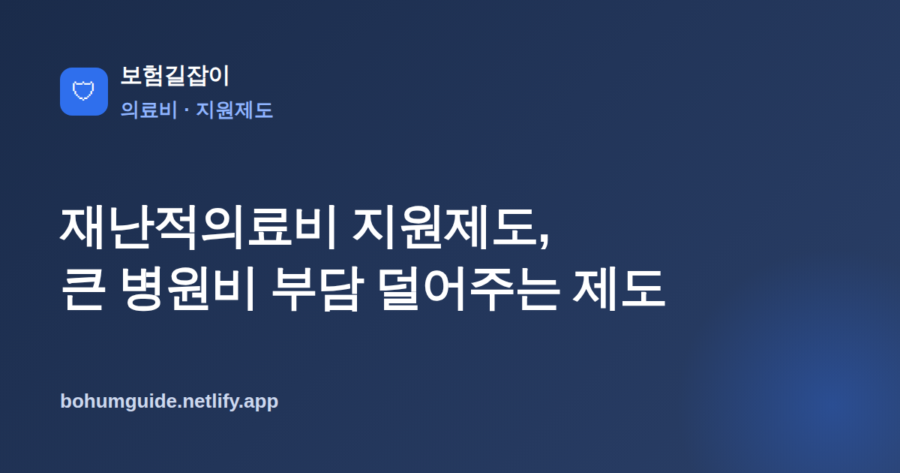

재난적의료비 지원제도, 큰 병원비 부담 덜어주는 제도 총정리
갑작스러운 큰 병이나 사고로 병원비가 감당하기 어려운 수준이 되면, 정부가 그 부담의 일부를 지원해 주는 제도가 있습니다. 바로 재난적의료비 지원제도입니다. 어떤 가구가, 어떤 요건으로, 어떻게 신청하는지 실전 기준으로 정리했습니다.

✍️ 편집자 참고: 본 글은 초안입니다. 지원 대상·소득/재산 기준·한도는 제도 개정으로 자주 바뀌니 게시 전 최신 기준으로 검수·수정해 주세요.
중병 치료나 장기 입원으로 병원비가 수백만 원, 수천만 원 단위로 쌓이면 건강보험만으로는 감당이 어려운 경우가 많습니다. 이럴 때 가계가 무너지는 것을 막기 위해 마련된 것이 재난적의료비 지원제도입니다. 실손보험이나 다른 제도로도 메우기 어려운 큰 부담을 국가가 나눠 지는 구조인데, 요건과 신청 절차를 모르면 대상이 되고도 놓치기 쉽습니다.
재난적의료비 지원제도란 무엇인가
재난적의료비 지원제도는 과도한 의료비 지출로 경제적 어려움을 겪는 가구에 대해, 본인이 부담한 의료비의 일정 부분을 정부가 지원해 주는 제도입니다. 소득 대비 의료비 부담이 지나치게 커서 '재난적'이라 부를 만한 상황을 완화하려는 취지입니다. 건강보험이 기본적인 급여를 보장하고, 본인부담상한제가 급여 안의 초과분을 돌려준다면, 재난적의료비 지원은 그 바깥에서 여전히 남는 큰 부담까지 폭넓게 살펴 지원하는 성격을 가집니다.
즉 여러 제도가 겹겹이 안전망을 이루는 구조에서 가장 바깥쪽 그물에 해당한다고 이해하면 쉽습니다. 다른 보장으로도 감당이 안 되는 부담이 남을 때, 소득·재산·의료비 수준을 종합해 심사한 뒤 지원 여부와 금액이 결정됩니다.
지원 대상·요건 개요
지원 여부는 크게 질환·소득·재산·의료비 발생 수준을 함께 봅니다. 일반적으로 소득이 기준중위소득 이하인 가구를 중심으로 하되, 재산이 일정 기준을 넘지 않아야 하고, 실제 부담한 의료비가 가구 규모 대비 정해진 문턱을 넘어야 지원 대상이 됩니다. 입원과 일부 외래 치료가 대상에 포함되는 등 질환·진료 유형에 따른 구분도 있습니다.
| 구분 | 내용 |
|---|---|
| 소득 기준 | 기준중위소득 이하 가구를 중심으로 판단(상세 구간은 매년 변동) |
| 재산 기준 | 가구 재산이 정해진 상한을 넘지 않아야 함 |
| 의료비 기준 | 본인부담 의료비가 가구 규모 대비 일정 수준을 초과 |
| 대상 진료 | 입원 및 일부 외래 치료 등 제도에서 정한 범위 |
핵심 정리
구체적인 소득·재산 상한과 의료비 문턱, 지원 한도는 제도 개정으로 자주 바뀝니다. 특정 수치를 외우기보다, "우리 가구 기준으로 올해 대상이 되는지"를 국민건강보험공단에 그해 기준으로 확인하는 것이 가장 정확합니다.
본인부담상한제·실손보험과의 관계
재난적의료비 지원은 다른 제도·보험과 중복해서 이중으로 받는 구조가 아닙니다. 지원 대상 의료비를 계산할 때, 이미 본인부담상한제로 환급받았거나 실손보험 등으로 보전받은 금액은 제외(차감)될 수 있습니다. 결국 '내가 최종적으로 실제 부담한 몫'을 기준으로 지원 규모를 따지는 셈입니다.
순서와 차감 개념 이해하기
따라서 큰 병원비가 있었던 해라면, 먼저 건강보험 급여와 본인부담상한제로 돌려받을 수 있는 부분을 확인하고, 실손보험으로 보상되는 부분을 정리한 뒤, 그래도 남는 부담에 대해 재난적의료비 지원을 검토하는 흐름이 자연스럽습니다. 상한제와 실손의 관계가 헷갈린다면 본인부담상한제와 실손보험 활용법을 함께 보면 차감 구조를 이해하기 쉽습니다. 손해처럼 보일 수 있지만, 여러 제도가 각자 다른 부분을 메워 주는 것이므로 전체적으로는 부담을 폭넓게 줄이는 방향입니다.
실전: 신청 방법·시기·필요서류
재난적의료비 지원은 국민건강보험공단이 창구입니다. 병원 사회사업실이나 공단 지사를 통해 상담·신청할 수 있으며, 놓치기 쉬운 것이 신청 기한입니다. 일반적으로 최종 진료(퇴원 등) 시점을 기준으로 정해진 기간 안에 신청해야 하므로, 치료가 끝난 뒤 미루다 기한을 넘기지 않도록 주의해야 합니다.
- 국민건강보험공단(지사·상담전화) 또는 진료 병원의 사회사업실에 대상 여부부터 문의
- 퇴원(최종 진료) 후 정해진 신청 기한 안에 접수 — 기한 경과 시 지원이 어려울 수 있음
- 진단서·진료비 영수증·세부내역서 등 의료비 관련 서류와 소득·재산 확인 서류 준비
- 세대별 자기부담 구조가 다르니 실손의료보험 세대별 정리로 내 보장부터 확인
놓치기 쉬운 점
지원은 대개 사후 신청·심사 방식이므로, 치료 중이거나 직후에 미리 상담해 두면 서류를 빠짐없이 챙기기 좋습니다. 의료비 영수증과 세부내역서는 실손 청구에도 함께 쓰이므로, 청구 서류 전반이 낯설다면 보험금 청구 절차 총정리를 참고해 상한제·실손·재난적의료비 서류를 한 번에 정리하는 것을 권합니다. 가구원 중 병원 이용이 많았던 사람이 있다면 각자 기준으로 살펴봐야 누락이 없습니다.
요약
재난적의료비 지원제도는 과도한 의료비로 어려운 가구에 본인부담 의료비의 일부를 정부가 지원하는 제도로, 소득·재산·의료비 수준을 종합해 대상 여부를 심사합니다. 본인부담상한제·실손 등으로 보전된 금액은 차감될 수 있어 최종 부담을 기준으로 지원이 이뤄집니다. 큰 병원비가 있었다면 퇴원 후 정해진 기한 안에 국민건강보험공단에 대상 여부부터 문의하는 것이 핵심이며, 구체 기준·한도는 제도 개정으로 자주 바뀌니 반드시 최신 기준으로 확인하시기 바랍니다.
본 정보는 일반적인 안내이며, 지원 대상·기준과 신청 방법은 국민건강보험공단 등 관계기관을 통해 반드시 확인하시기 바랍니다.